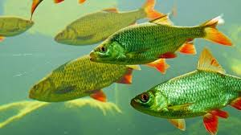

Fish are aquatic creatures, they have evolved to be perfectly adapted to aquatic environments. Because of their adaptation to aquatic environments they've developed organs/parts that are useful underwater, organs like scales, gills, fins, and their tails. Some species of fish adapted to bodies of freshwater while some evolved in seawater, leading to two different types of fish; Fishwater and Seawater fish.
Of all animals involved in agriculture or was domesticated by humans, fishes have the largest population. This is because of their relatively short lifespans, which causes them to sexually mature earlier and have more offspring. Pisiculture or fish farming is raising fish for commercial purposes, meat is the usual use for these fishes.